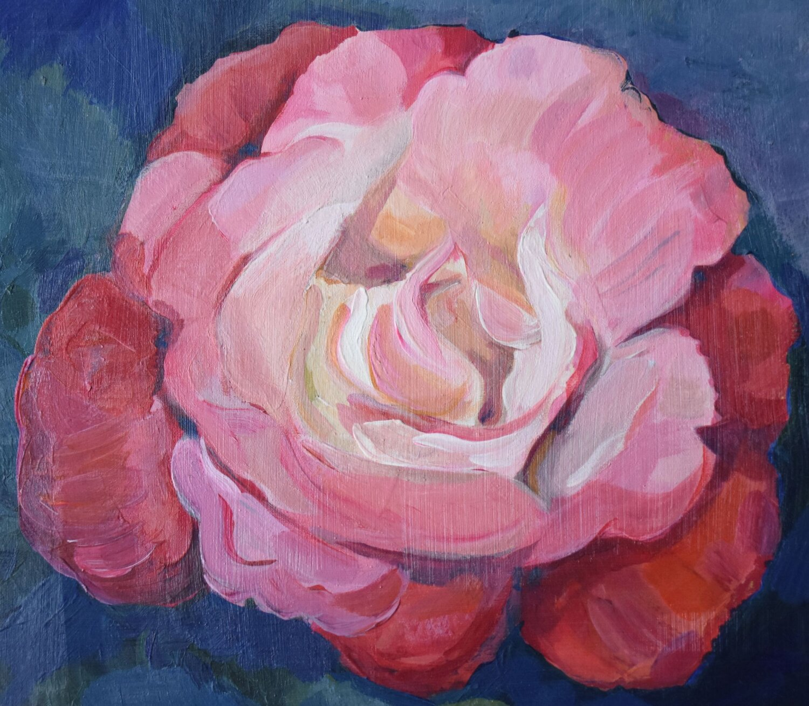

Bloemen met karakter, voor elk moment
Flor-Es maakt bloemwerk voor bruiloften, afscheid en projecten, geeft workshops en begeleidt stellen bij hun trouwdag. Altijd persoonlijk, bij jou thuis of bij ons.

Vier manieren om met bloemen te werken
Bloemwerk
Bruidswerk, rouwwerk, projecten en boeketten op bestelling, op maat gemaakt.
Bekijk bloemwerk →Workshops
Voor bedrijven, instellingen en particulieren. Een creatieve middag of avond.
Meer over workshops →Groei en Bloei Veenendaal
Workshops via de afdeling Veenendaal, voor iedereen die van bloemen houdt.
Bekijk het aanbod →Trouwplanner
Hulp bij het regelen van jullie trouwdag, op de manier die bij jullie past.
Lees meer →Persoonlijk, van begin tot eind
Esther Leefoge ontvangt je thuis of komt bij je langs. Samen bespreek je wat je wilt, en als je dat prettig vindt ga je mee naar de bloemengroothandel om de bloemen zelf uit te kiezen.
Meer over EstherBenieuwd naar de mogelijkheden?
Vertel wat je in gedachten hebt. Je krijgt vrijblijvend informatie of een offerte op maat.